Chapter 7 Farm typologies
This chapter presents a statistical approach to characterizing farm diversity and identifying representative farms for research and development activities.
7.1 Concept of farm typology
Farm typologies aims at characterizing the diversity of farming systems and their distribution in heterogenous communities, as a basis for prioritizing interventions (Hammond et al. 2020) and/or to select representative farms, or ‘prototype farms’ (Alvarez et al. 2018).
Various methodologies, all with their strengths and their weaknesses, are commonly used to delineate typologies, from (quantitative) statistical typology (Tittonell et al. 2010) to (qualitative) expert-based typology involving farmers and other knowledgeable stakeholders (B. Kebede 2009).
Here, we use a statistical approach that combines Gower dissimilarities, principal coordinate analysis (PCoA), and partitioning around medoids (PAM). Gower dissimilarities allow continuous and categorical variables to be considered together when comparing farms.
In the example below, we will use the small dataset we created in the previous chapter (and that was saved as a rds file). You can also download it here (and load it with the function read.csv()): https://github.com/FBaudron/book_standardized_workflows/blob/main/07-farm_typologies/small_dataset.csv
A standalone R script containing the full workflow is available at the following link: https://github.com/FBaudron/book_standardized_workflows/blob/main/07-farm_typologies/farm_typologies.R.
We first load the necessary packages.
if (!require("openxlsx")) install.packages("openxlsx")
if (!require("cluster")) install.packages("cluster")
if (!require("gtsummary")) install.packages("gtsummary")
if (!require("splitstackshape")) install.packages("splitstackshape")
if (!require("randomForest")) install.packages("randomForest")
library(openxlsx)
library(cluster)
library(gtsummary)
library(splitstackshape)
library(randomForest)7.2 Data preparation
We begin by importing the data.
data = readRDS("small_dataset.rds")
# data = read.xlsx('small_dataset.xlsx', sheet = 1)We first rename some variables, recode some categorical variables into binary ones, and convert NAs into zeros for some variables.
names(data)[c(1, 4:6, 27, 29, 33:36)] = c("ID", "age_hhh", "sex_hhh", "edu_hhh",
"cover_crops", "integrated_pest_management", "homemade_feeds", "fodder_production",
"fodder_preservation", "survival_feeding")
data$sex_hhh = as.numeric(data$sex_hhh == "Female")
data$edu_hhh = as.numeric(data$edu_hhh != "Primary level")
data$main_food_source = as.numeric(data$main_food_source == "Own production")
data$main_income_source = as.numeric(data$main_income_source == "Crop sales" | data$main_income_source ==
"Livestock sales")
data[c(23:36)][is.na(data[c(23:36)])] = 07.2.1 Removing outliers
We remove extreme values to avoid skewing the analysis. For this, we plot and examine boxplots. Points beyond the whiskers of the boxplot have values higher than 1.5 times the interquartile range and are considered potential outliers. When such extreme points are observable, we remove them from the dataset.
Age of the head of the household doesn’t have any true marked outlier.
boxplot(data$age_hhh)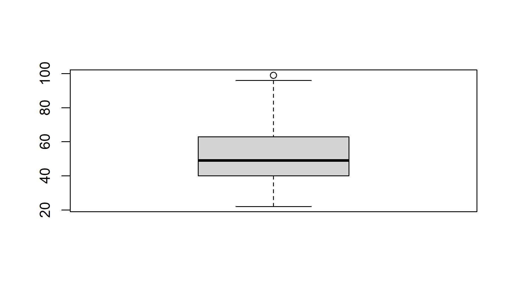
But family size does.
boxplot(data$family_size)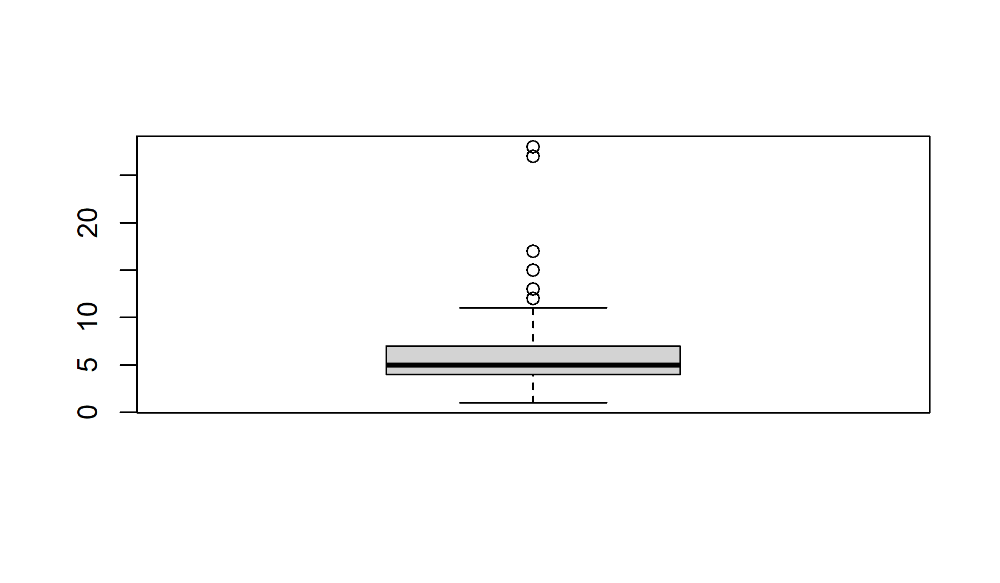
Thus, we remove all records with a family size greater than 20.
data = data[data$family_size < 20, ]
boxplot(data$family_size)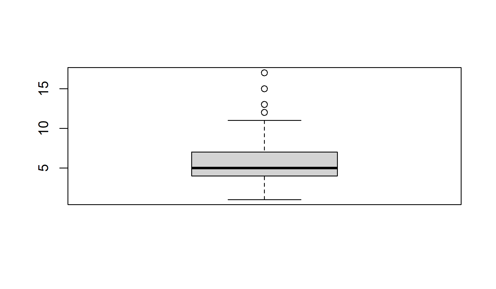
We inspect all other continuous variables, and find outliers for the number of small ruminants, the number of poultry, livestock offtake, and equipment value. We remove these extreme values from the dataset that we will use to delineate the farm typology.
# boxplot(data$cropped_area)
# boxplot(data$fallow)
# boxplot(data$prop_non_cereals)
# boxplot(data$fertilizers)
# boxplot(data$amendment)
# boxplot(data$cattle)
# boxplot(data$small_rum)
data = data[data$small_rum < 100, ]
# boxplot(data$small_rum)
# boxplot(data$poultry)
data = data[data$poultry < 400, ]
# boxplot(data$poultry)
# boxplot(data$food_security)
# boxplot(data$hdds)
# boxplot(data$tot_div)
# boxplot(data$cereal_prod)
# boxplot(data$offtake)
data = data[data$offtake < 6, ]
# boxplot(data$offtake)
# boxplot(data$eq_value)
data = data[data$eq_value < 8000, ]
# boxplot(data$eq_value)7.2.2 Normalization of continuous variables
To reduce the influence of extreme values, continuous variables are log-transformed.
We create first a copy of the dataset before data transformation.
typo = dataWe plot histograms of continuous variables, and when distribution departs too much from a Gaussian distribution, we logtransform the variable. In that case, we take care of adding a term - half of the minimum positive value - to avoid passing zeros to log10.
Age of the head of the household has a relatively Gaussian distribution.
hist(typo$age_hhh)
But family size has a distribution that departs markedly from a Gaussian distribution.
hist(typo$family_size)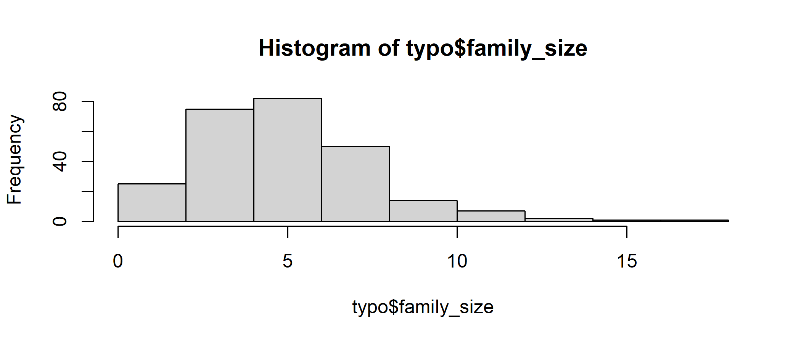
Thus, we logtransform the variable family size.
typo$family_size = log10(typo$family_size + (0.5 * min(typo$family_size[typo$family_size >
0], na.rm = TRUE)))
hist(typo$family_size)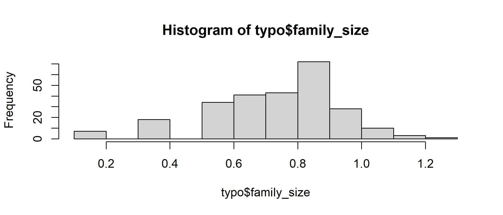
We inspect all other continuous variables, and find the total cropped area, the fallow area, the total quantity of fertilizer used, the total quantity of organic amendments used, the number of cattle, the number of small ruminants, the number of poulty, the total quantity of cereal produced, the livestock offtake, and the equipment value to depart markedly from a Gaussian distribution. We therefore log-transformed these variables.
# hist(typo$cropped_area)
typo$cropped_area = log10(typo$cropped_area + (0.5 * min(typo$cropped_area[typo$cropped_area >
0], na.rm = TRUE)))
# hist(typo$cropped_area)
# hist(typo$fallow)
typo$fallow = log10(typo$fallow + (0.5 * min(typo$fallow[typo$fallow > 0], na.rm = TRUE)))
# hist(typo$fallow)
# hist(typo$prop_non_cereals)
# hist(typo$fertilizers)
typo$fertilizers = log10(typo$fertilizers + (0.5 * min(typo$fertilizers[typo$fertilizers >
0], na.rm = TRUE)))
# hist(typo$fertilizers)
# hist(typo$amendment)
typo$amendment = log10(typo$amendment + (0.5 * min(typo$amendment[typo$amendment >
0], na.rm = TRUE)))
# hist(typo$amendment)
# hist(typo$cattle)
typo$cattle = log10(typo$cattle + (0.5 * min(typo$cattle[typo$cattle > 0], na.rm = TRUE)))
# hist(typo$cattle)
# hist(typo$small_rum)
typo$small_rum = log10(typo$small_rum + (0.5 * min(typo$small_rum[typo$small_rum >
0], na.rm = TRUE)))
# hist(typo$small_rum)
# hist(typo$poultry)
typo$poultry = log10(typo$poultry + (0.5 * min(typo$poultry[typo$poultry > 0], na.rm = TRUE)))
# hist(typo$poultry)
# hist(typo$food_security)
# hist(typo$hdds)
# hist(typo$tot_div)
# hist(typo$cereal_prod)
typo$cereal_prod = log10(typo$cereal_prod + (0.5 * min(typo$cereal_prod[typo$cereal_prod >
0], na.rm = TRUE)))
# hist(typo$cereal_prod)
# hist(typo$offtake)
typo$offtake = log10(typo$offtake + (0.5 * min(typo$offtake[typo$offtake > 0], na.rm = TRUE)))
# hist(typo$offtake)
# hist(typo$eq_value)
typo$eq_value = log10(typo$eq_value + (0.5 * min(typo$eq_value[typo$eq_value > 0],
na.rm = TRUE)))
# hist(typo$eq_value)7.3 Delineation of farm types
We delineate farm types in three steps: (1) calculate a single Gower dissimilarity matrix combining continuous and categorical variables; (2) use principal coordinate analysis (PCoA) to represent the main dimensions of farm diversity; and (3) use partitioning around medoids (PAM) to identify groups of farms.
7.3.1 Preparing the typology dataset
We first remove records with missing values in the variables used for the typology. This ensures that all farms are compared using the same set of variables and avoids pairwise differences in the information used to calculate dissimilarities.
typo = na.omit(typo)7.3.2 Calculating Gower dissimilarities
We calculate dissimilarities among farms using the function daisy() from the R package cluster (Maechler et al. (2026)). We use Gower’s metric because the typology combines continuous variables with binary variables. Gower dissimilarity scales continuous variables according to their observed ranges and combines their contributions with those of categorical variables.
The variables included are those previously used to describe the structural and functional characteristics of farms, together with the adoption of agricultural practices. Binary variables representing the presence or adoption of a characteristic are specified as asymmetric binary variables (asymm). This means that joint absences (two farms both lacking a characteristic) do not contribute to their similarity, whereas joint presences do. Household characteristics and the main sources of food and income are retained as symmetric binary variables.
typology_vars <- c("age_hhh", "sex_hhh", "edu_hhh", "family_size", "cropped_area",
"fallow", "prop_non_cereals", "fertilizers", "amendment", "cattle", "small_rum",
"poultry", "food_security", "hdds", "tot_div", "cereal_prod", "offtake", "eq_value",
"bee_hives", "ind_garden", "com_garden", "main_food_source", "main_income_source",
"community_seed_banks", "small_grains", "crop_rotation", "intercropping", "cover_crops",
"mulching", "integrated_pest_management", "compost_manure", "tree_planting_on_farm",
"tree_retention_natural_regeneration_on_farm", "homemade_feeds", "fodder_production",
"fodder_preservation", "survival_feeding")
asymmetric_binary_vars <- c("bee_hives", "ind_garden", "com_garden", "community_seed_banks",
"small_grains", "crop_rotation", "intercropping", "cover_crops", "mulching",
"integrated_pest_management", "compost_manure", "tree_planting_on_farm", "tree_retention_natural_regeneration_on_farm",
"homemade_feeds", "fodder_production", "fodder_preservation", "survival_feeding")
diss <- cluster::daisy(typo[, typology_vars], metric = "gower", type = list(asymm = asymmetric_binary_vars))7.3.3 Reducing dimensionality using PCoA
We use principal coordinate analysis (PCoA), implemented with cmdscale(), to represent the dissimilarities in a reduced number of dimensions. We retain the smallest number of axes accounting for at least 50% of the total variation represented by the eigenvalues. These axes are then used for clustering.
pco <- cmdscale(diss, eig = TRUE, k = 10)
# Inspect the eigenvalues
barplot(pco$eig[1:20])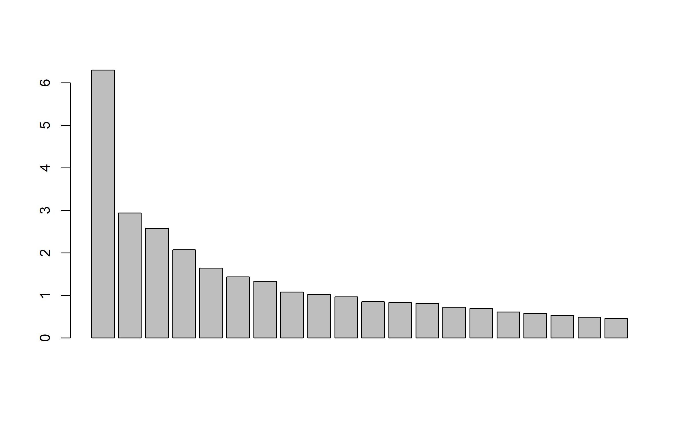
# Retain enough axes to account for at least 50% of the variation
cum_var <- cumsum(pco$eig)/sum(pco$eig)
k_axes <- which(cum_var >= 0.5)[1]
k_axes[1] 3pco_var <- pco$points[, 1:k_axes, drop = FALSE]7.3.4 Selecting the number of farm types
We use the average silhouette width to compare solutions with between 3 and 6 clusters. For each candidate number of clusters, we apply PAM to the Euclidean distances among farms in the retained PCoA space. The average silhouette width measures how well each farm fits within its assigned cluster compared with neighbouring clusters. We select the number of clusters with the highest average silhouette width.
k_candidates <- 3:6
sil_width <- numeric(length(k_candidates))
names(sil_width) <- k_candidates
for (k in k_candidates) {
pam_fit <- cluster::pam(dist(pco_var), k = k, diss = TRUE)
sil_width[as.character(k)] <- pam_fit$silinfo$avg.width
}
best_k <- as.integer(names(which.max(sil_width)))
best_k[1] 3plot(k_candidates, sil_width, type = "b", pch = 19, xlab = "Number of farm types",
ylab = "Average silhouette width")
abline(v = best_k, col = "red", lty = 2)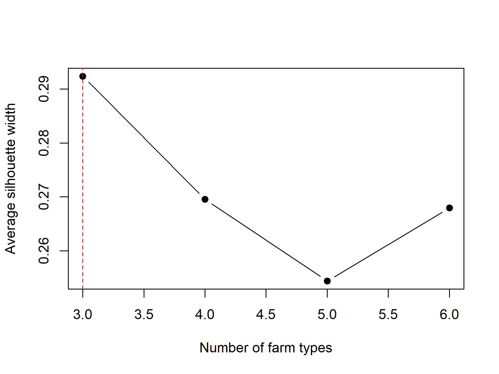
7.3.5 Classifying farms using PAM
We run the final PAM classification using the retained PCoA axes and the selected number of clusters. PAM partitions farms around representative observations called medoids. Compared with methods based on cluster centroids, medoids are actual farms in the dataset and are therefore useful when identifying representative farms for subsequent analysis or on-farm research.
final_pam <- cluster::pam(pco_var, k = best_k, diss = FALSE)
grpPCO <- final_pam$clustering
typo$type <- factor(grpPCO)
# Add farm type to the original dataset
data <- merge(data, typo[, c("ID", "type")], by = "ID")7.3.6 Visualising farm types in PCoA space
We plot the farm types on the first three PCoA axes to visualise how the groups are distributed in the reduced multidimensional space.
plot(pco$points[, 1], pco$points[, 2], col = grpPCO, xlab = "PCO1", ylab = "PCO2")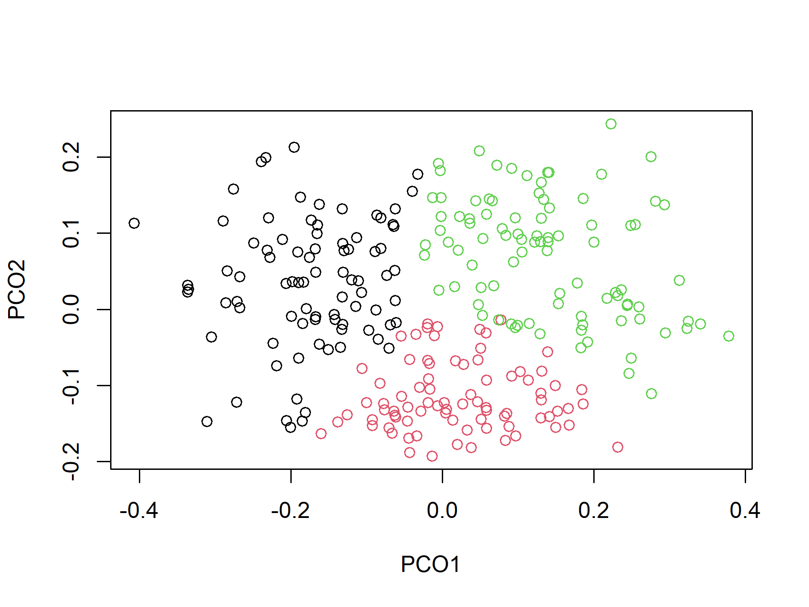
plot(pco$points[, 1], pco$points[, 3], col = grpPCO, xlab = "PCO1", ylab = "PCO3")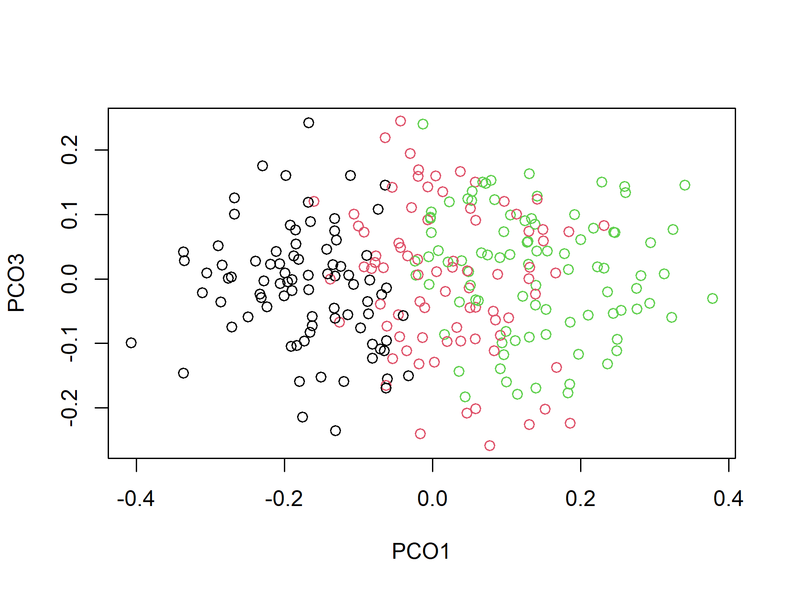
plot(pco$points[, 2], pco$points[, 3], col = grpPCO, xlab = "PCO2", ylab = "PCO3")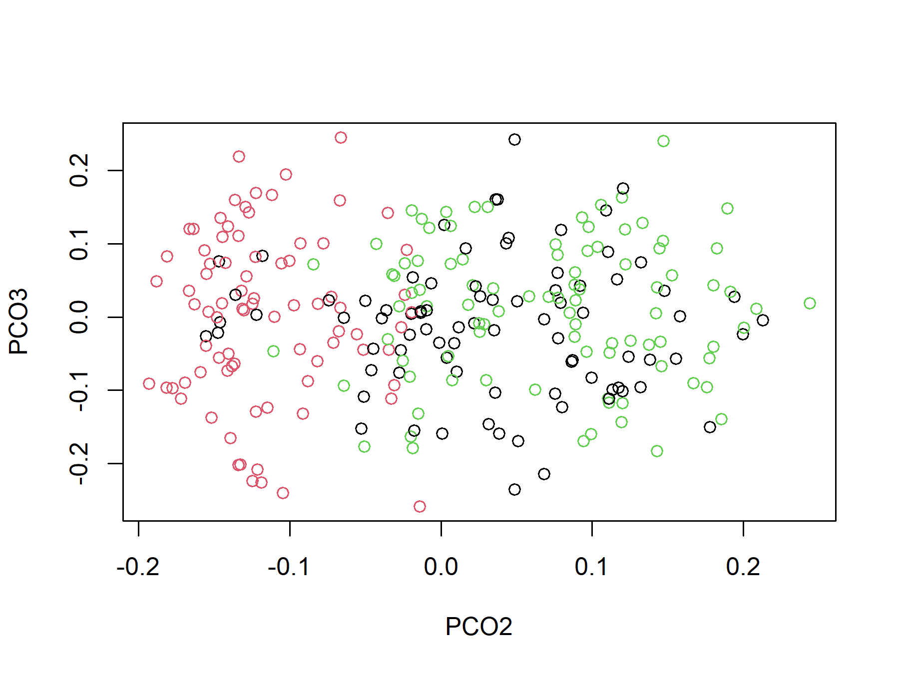
7.4 Interpretation of the farm typology
7.4.1 Random forest
To understand which variables are the most segregating in our typology, we fit a random forest classification model and assess variable importance through the Mean Decrease in Gini index using the R package randomForest (Liaw and Wiener 2002).
The out-of-bag error rate and class-specific error rates provide an indication of how well the variables distinguish the farm types. These values are recalculated when the chapter is run and depend on the typology obtained from the PAM classification.
data$type = as.factor(data$type)
rf_type = randomForest(type ~ ., data = data[, -c(1:3)], ntree = 1500)
print(rf_type)
Call:
randomForest(formula = type ~ ., data = data[, -c(1:3)], ntree = 1500)
Type of random forest: classification
Number of trees: 1500
No. of variables tried at each split: 6
OOB estimate of error rate: 9.73%
Confusion matrix:
1 2 3 class.error
1 79 2 3 0.05952381
2 9 67 5 0.17283951
3 1 5 86 0.06521739Next, we plot variable importance.
The variable-importance plot identifies the variables that contribute most to distinguishing the farm types. Their relative importance is recalculated when the chapter is run.
varImpPlot(rf_type)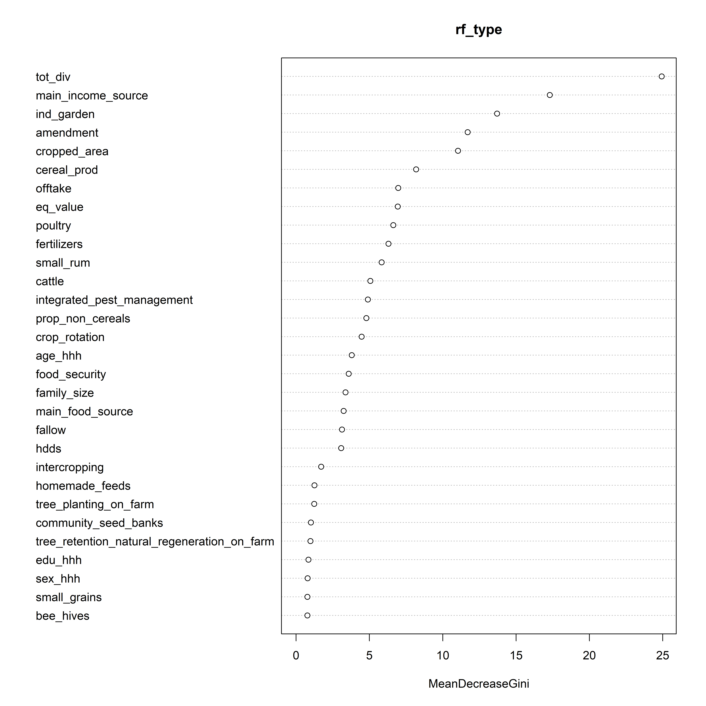
7.4.2 Summary table
To further interprete the typology, we produce a table from variables used in the delineation of the typology, displaying means and standard deviations for continuous ones and % for binary ones for the different types, using tbl_summary() from the R package gtsummary (see previous chapter.
add_p() adds a column of statistical test, and add_overall() values for the whole population.
data[, -c(1:3)] %>%
tbl_summary(by = type, statistic = list(all_continuous() ~ "{mean} ({sd})", all_categorical() ~
"{p}%"), type = list(hdds ~ "continuous"), digits = all_continuous() ~ 1,
label = list(age_hhh ~ "Age of the head of the household", sex_hhh ~ "Female-headed households",
edu_hhh ~ "Education of the head of the household higher than primary",
family_size ~ "Family size", eq_value ~ "Equipment value (USD)", cropped_area ~
"Total cropped area (ha)", fallow ~ "Fallow land (ha)", prop_non_cereals ~
"Non-cereal crops (% total cropped area)", fertilizers ~ "Total fertilizer used (kg)",
amendment ~ "Total manure + compost used (kg)", cattle ~ "Cattle (n)",
small_rum ~ "Small ruminants (n)", poultry ~ "Poultry (n)", bee_hives ~
"Bee keeping", ind_garden ~ "Owning an individual garden", com_garden ~
"Having access to a communal garden", main_food_source ~ "Own production as main source of food",
main_income_source ~ "Farming as main source of income", food_security ~
"Proportion of the year being food secured", hdds ~ "24H household dietary diversity score (0-12)",
community_seed_banks ~ "Using a community seed bank", small_grains ~
"Using small grains", crop_rotation ~ "Using crop rotation", intercropping ~
"Using intercropping", cover_crops ~ "Using cover crops", mulching ~
"Using mulching", integrated_pest_management ~ "Using integrated pest management",
compost_manure ~ "Using compost and manure", tree_planting_on_farm ~
"Planting trees on-farm", tree_retention_natural_regeneration_on_farm ~
"Retaining naturally regenerated trees on-farm", homemade_feeds ~
"Using homemade animal feed", fodder_production ~ "Produccing fodder",
fodder_preservation ~ "Preserving fodder", survival_feeding ~ "Using survival feeding",
tot_div ~ "Total farm diversity (n species)", cereal_prod ~ "Total cereal production (kg/yr)",
offtake ~ "Total livestock offtake (TLU/yr)")) %>%
add_p(test = list(all_continuous() ~ "kruskal.test", all_categorical() ~ "chisq.test")) %>%
add_overall()| Characteristic | Overall N = 2571 |
1 N = 841 |
2 N = 811 |
3 N = 921 |
p-value2 |
|---|---|---|---|---|---|
| Age of the head of the household | 51.6 (15.8) | 52.1 (18.6) | 52.0 (14.7) | 50.8 (13.9) | 0.8 |
| Female-headed households | 24% | 36% | 21% | 15% | 0.005 |
| Education of the head of the household higher than primary | 38% | 31% | 30% | 52% | 0.002 |
| Family size | 5.4 (2.5) | 4.3 (2.0) | 5.5 (2.4) | 6.3 (2.6) | <0.001 |
| Total cropped area (ha) | 1.7 (1.4) | 0.8 (0.8) | 2.3 (1.5) | 2.1 (1.4) | <0.001 |
| Fallow land (ha) | 0.7 (1.4) | 0.4 (0.9) | 0.7 (1.4) | 1.1 (1.6) | <0.001 |
| Non-cereal crops (% total cropped area) | 29.3 (29.1) | 16.8 (29.2) | 33.7 (30.3) | 36.8 (24.0) | <0.001 |
| Total fertilizer used (kg) | 85.6 (115.9) | 24.0 (42.5) | 105.4 (126.9) | 124.5 (128.7) | <0.001 |
| Total manure + compost used (kg) | 258.0 (543.0) | 45.0 (102.1) | 172.3 (468.0) | 527.9 (710.9) | <0.001 |
| Cattle (n) | 3.6 (6.7) | 0.3 (1.0) | 3.5 (4.8) | 6.9 (9.3) | <0.001 |
| Small ruminants (n) | 8.5 (11.2) | 2.7 (3.5) | 8.2 (10.5) | 13.9 (13.7) | <0.001 |
| Poultry (n) | 9.4 (11.3) | 3.1 (4.7) | 10.9 (13.4) | 13.8 (11.0) | <0.001 |
| Bee keeping | 11% | 3.6% | 16% | 12% | 0.028 |
| Owning an individual garden | 47% | 32% | 14% | 89% | <0.001 |
| Having access to a communal garden | 1.2% | 0% | 1.2% | 2.2% | 0.4 |
| Own production as main source of food | 75% | 54% | 96% | 75% | <0.001 |
| Farming as main source of income | 51% | 20% | 96% | 38% | <0.001 |
| Proportion of the year being food secured | 0.5 (0.3) | 0.4 (0.3) | 0.6 (0.3) | 0.6 (0.2) | <0.001 |
| 24H household dietary diversity score (0-12) | 3.1 (1.0) | 2.8 (0.9) | 3.0 (1.1) | 3.5 (0.9) | <0.001 |
| Using a community seed bank | 12% | 6.0% | 25% | 5.4% | <0.001 |
| Using small grains | 86% | 73% | 96% | 90% | <0.001 |
| Using crop rotation | 50% | 23% | 46% | 79% | <0.001 |
| Using intercropping | 16% | 8.3% | 2.5% | 36% | <0.001 |
| Using cover crops | 8.2% | 4.8% | 9.9% | 9.8% | 0.4 |
| Using mulching | 9.7% | 1.2% | 12% | 15% | 0.005 |
| Using integrated pest management | 49% | 17% | 58% | 72% | <0.001 |
| Using compost and manure | 16% | 3.6% | 19% | 24% | <0.001 |
| Planting trees on-farm | 14% | 1.2% | 17% | 22% | <0.001 |
| Retaining naturally regenerated trees on-farm | 36% | 32% | 26% | 48% | 0.008 |
| Using homemade animal feed | 25% | 4.8% | 31% | 37% | <0.001 |
| Produccing fodder | 3.9% | 0% | 4.9% | 6.5% | 0.069 |
| Preserving fodder | 3.1% | 0% | 1.2% | 7.6% | 0.007 |
| Using survival feeding | 3.9% | 0% | 4.9% | 6.5% | 0.069 |
| Total farm diversity (n species) | 6.7 (3.5) | 3.8 (1.9) | 5.8 (2.4) | 10.1 (2.6) | <0.001 |
| Total cereal production (kg/yr) | 839.4 (923.3) | 337.8 (375.0) | 1,090.9 (926.4) | 1,076.1 (1,081.7) | <0.001 |
| Total livestock offtake (TLU/yr) | 0.3 (0.5) | 0.0 (0.1) | 0.3 (0.5) | 0.5 (0.6) | <0.001 |
| Equipment value (USD) | 231.5 (296.5) | 51.8 (98.3) | 263.0 (275.1) | 367.9 (349.9) | <0.001 |
| 1 Mean (SD); % | |||||
| 2 Kruskal-Wallis rank sum test; Pearson’s Chi-squared test | |||||
7.4.3 Most representative farm of each type
Finally, we identify the most representative farm of each type using the medoids returned by the PAM classification. A medoid is an observed farm that is centrally located within its type, based on its dissimilarities to the other farms in that type.
The following code retrieves the IDs of the medoid farms and their farm types.
medoid_farms <- data.frame(ID = typo$ID[final_pam$id.med], type = factor(final_pam$clustering[final_pam$id.med],
levels = sort(unique(final_pam$clustering))))
medoid_farms ID type
261 566 1
114 419 2
89 394 3We then retrieve the full records for these representative farms.
most_representative_farms <- merge(medoid_farms, data, by = c("ID", "type"), sort = FALSE)
# Transpose the table
farm_table <- as.data.frame(t(as.matrix(most_representative_farms %>%
dplyr::select(-ID))), check.names = FALSE)
# Assign farm IDs to columns
colnames(farm_table) <- paste0("Farm ", most_representative_farms$ID)
knitr::kable(farm_table, format = "html", row.names = TRUE, col.names = c("", colnames(farm_table)),
caption = "Characteristics of the most representative farms", align = "lccc",
escape = TRUE)| Farm 566 | Farm 419 | Farm 394 | |
|---|---|---|---|
| type | 1 | 2 | 3 |
| ward | Ward 2 | Ward 3 9 12 17 | Ward 2 |
| district | Mbire | Mbire | Mbire |
| age_hhh | 32 | 45 | 66 |
| sex_hhh | 1 | 0 | 0 |
| edu_hhh | 1 | 1 | 0 |
| family_size | 4 | 7 | 3 |
| cropped_area | 0.8 | 2.0 | 1.8 |
| fallow | 0 | 0 | 1 |
| prop_non_cereals | 0.00000 | 49.97501 | 44.41977 |
| fertilizers | 100 | 100 | 100 |
| amendment | 0 | 0 | 450 |
| cattle | 0 | 2 | 5 |
| small_rum | 0 | 0 | 6 |
| poultry | 0 | 0 | 30 |
| bee_hives | 0 | 0 | 0 |
| ind_garden | 0 | 0 | 1 |
| com_garden | 0 | 0 | 0 |
| main_food_source | 1 | 1 | 1 |
| main_income_source | 0 | 1 | 0 |
| food_security | 0.4166667 | 0.6666667 | 0.8333333 |
| hdds | 4 | 2 | 4 |
| community_seed_banks | 0 | 0 | 0 |
| small_grains | 0 | 1 | 1 |
| crop_rotation | 1 | 1 | 1 |
| intercropping | 0 | 0 | 0 |
| cover_crops | 0 | 0 | 0 |
| mulching | 0 | 0 | 0 |
| integrated_pest_management | 0 | 1 | 0 |
| compost_manure | 0 | 0 | 1 |
| tree_planting_on_farm | 0 | 0 | 0 |
| tree_retention_natural_regeneration_on_farm | 0 | 0 | 1 |
| homemade_feeds | 0 | 1 | 0 |
| fodder_production | 0 | 0 | 0 |
| fodder_preservation | 0 | 0 | 0 |
| survival_feeding | 0 | 0 | 0 |
| tot_div | 1 | 4 | 11 |
| cereal_prod | 500 | 250 | 520 |
| offtake | 0 | 0 | 0 |
| eq_value | 50 | 150 | 700 |
7.5 Selection of stratified samples
Typologies can be used to select a sample of farms representative of the overall population to e.g., host on-farm experiments.
Below, we select 30 representative farms using farm type as single stratum.
sample1 = as.data.frame(stratified(data, "type", 30/nrow(data)))
table(sample1$type)
1 2 3
10 9 11 We can also use more than one stratum: here we select 30 representative farms using ward (an administrative unit) and farm type as strata.
sample2 = as.data.frame(stratified(data, c("ward", "type"), 30/nrow(data)))
table(sample2$type, sample2$ward)
Ward 2 Ward 3 9 12 17
1 7 3
2 2 7
3 6 5